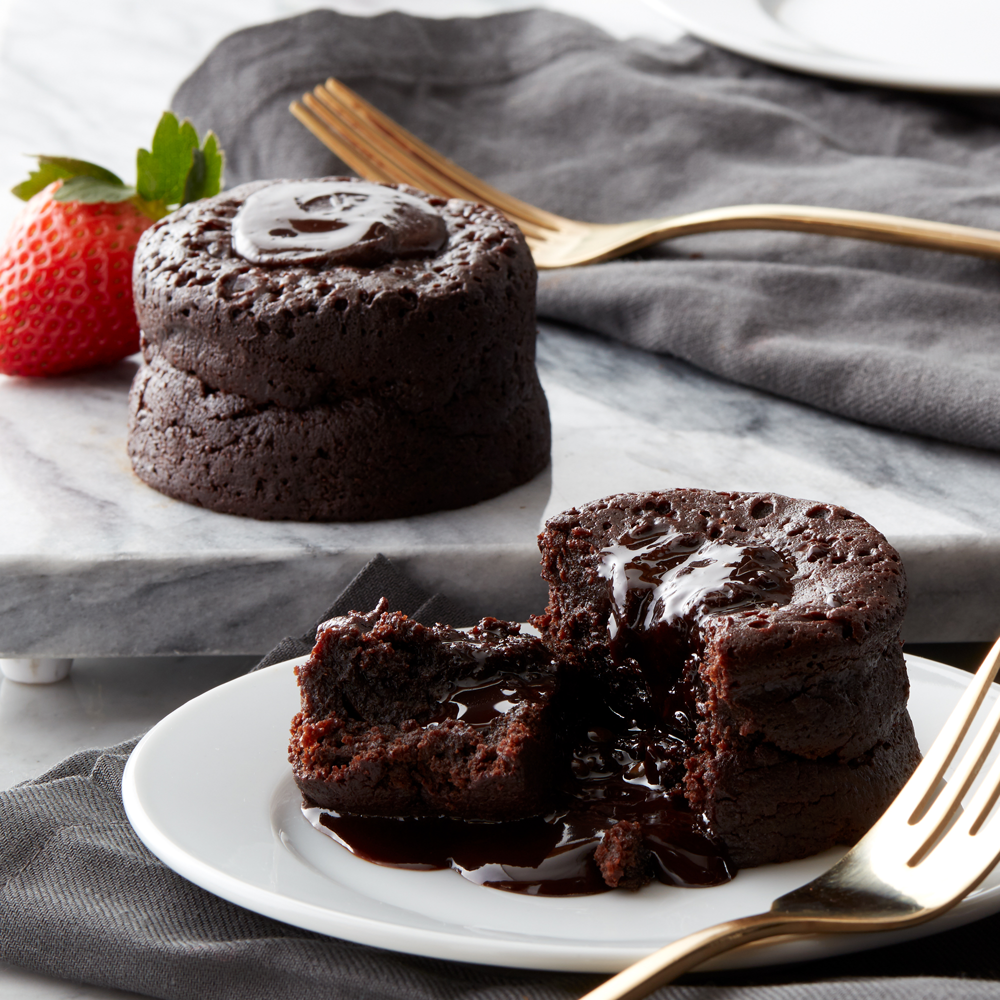

Chocolate Lava

Description
Indulge in the decadent delight of our Chocolate Lava Cake, a heavenly
dessert that tantalizes the taste buds with its rich and velvety texture.
With a crispy exterior that gives way to a warm, molten center of luscious
chocolate, each bite is a symphony of flavors and textures.
This exquisite dessert combines the simplicity of its ingredients with the
complexity of its flavors, creating a perfect balance that will leave you
craving for more. The bittersweet chocolate melts into a gooey pool of
goodness, creating an irresistible contrast with the light and airy cake
surrounding it.
Whether enjoyed on its own or paired with a scoop of vanilla ice cream,
our Chocolate Lava Cake is guaranteed to elevate any dining experience.
Treat yourself and your loved ones to this indulgent masterpiece and savor
the blissful sensation of chocolatey perfection.
ingredients:
- 1/2 cup unsalted butter
- 4 ounces bittersweet chocolate, chopped
- 2 eggs
- 2 egg yolks
- 1/4 cup sugar
- 2 tablespoons all-purpose flour
- Butter and cocoa powder for preparing the ramekins
Instructions:
-
Preheat your oven to 450°F (230°C). Butter and lightly dust four
ramekins with cocoa powder.
-
In a double boiler, melt the butter and chocolate together until smooth.
-
In a separate bowl, beat the eggs, egg yolks, and sugar until light and
fluffy.
- Gradually fold the melted chocolate mixture into the egg mixture.
- Gently fold in the flour until just combined.
- Divide the batter evenly among the prepared ramekins.
-
Bake for 12-14 minutes, until the edges are set but the center is still
soft.
-
Let the cakes cool for 1 minute, then run a knife around the edges to
loosen and invert onto dessert plates. Serve immediately.
Back